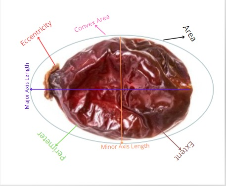
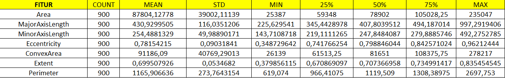
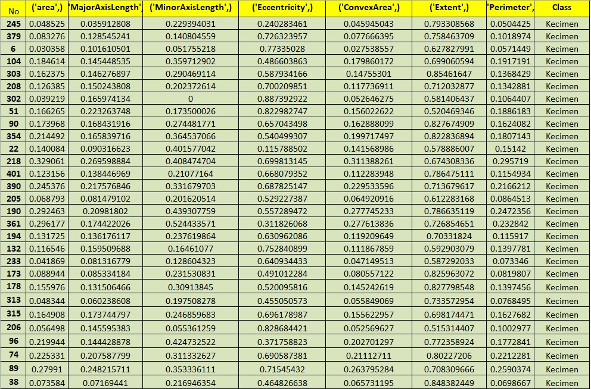
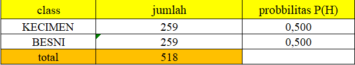
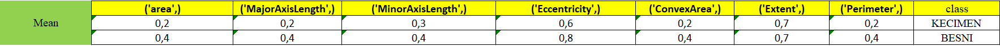
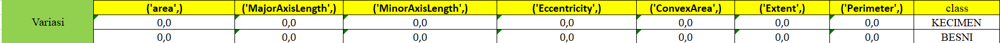
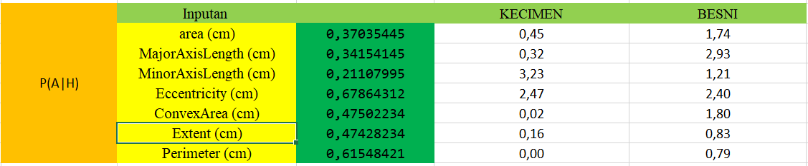

!pip install openpyxl
Requirement already satisfied: openpyxl in /usr/local/lib/python3.10/dist-packages (3.1.2)
Requirement already satisfied: et-xmlfile in /usr/local/lib/python3.10/dist-packages (from openpyxl) (1.1.0)
UTS-Klasifikasi dataset “Raisin”#
Project ini bertujuan untuk mengklasifikasikan kismis berdasarkan dari data “Raisin” yang diperoleh melalui pengambilan gambar buah anggur yang dikeringkan dari dua varietas yang berbeda, yaitu Kecimen dan Besni. Proses pengambilan gambar dilakukan dengan menggunakan sistem Computer Vision System (CVS). Ilkay CINAR, Murat KOKLU, dan Sakir TASDEMIR, yang merupakan bagian dari Faculty of Technology di Selcuk University, Konya, Turki, bertanggung jawab atas pengumpulan data ini.
MEMAHAMI DATA#
1. Memahami cara memperoleh data (bagaimana data didapat)#
Data “Raisin” diperoleh melalui pengambilan gambar buah anggur dari dua varietas yang berbeda, yaitu Kecimen dan Besni. Proses pengambilan gambar dilakukan dengan menggunakan sistem Computer Vision System (CVS). Ilkay CINAR, Murat KOKLU, dan Sakir TASDEMIR, yang merupakan bagian dari Faculty of Technology di Selcuk University, Konya, Turki, bertanggung jawab atas pengumpulan data ini.
Proses pengambilan gambar dilakukan untuk mengumpulkan data visual tentang morfologi buah anggur dari kedua varietas tersebut. Setelah gambar-gambar ini diperoleh, dilakukan beberapa tahapan pra-pemrosesan untuk memastikan kualitas data yang diperoleh. Selanjutnya, dari gambar-gambar tersebut, 7 fitur morfologis ekstraksi untuk setiap buah anggur.
Data ini memiliki nilai tambah karena memberikan informasi yang lebih rinci tentang morfologi buah anggur dari varietas Kecimen dan Besni, yang dapat digunakan dalam berbagai aplikasi, termasuk klasifikasi buah anggur menggunakan metode Machine Vision dan kecerdasan buatan (Artificial Intelligence).
Dengan demikian, pengambilan data dilakukan melalui proses pengambilan gambar buah anggur menggunakan CVS oleh tim peneliti yang terkait dengan Selcuk University, dan proses selanjutnya melibatkan ekstraksi fitur morfologis dari gambar-gambar tersebut untuk analisis lebih lanjut.
GAMBAR DIBAWAH ADALAH GAMBAR DARI KISMIS VARIAN BESNI
.jpg)
GAMBAR DIBAWAH ADALAH GAMBAR DARI KISMIS VARIAN KECIMEN
Jadi, data Raisin adalah data yang memuat data kismis yang memiliki 2 varietas, yaitu Kecimen dan Besni. Dataset ini memiliki 900 data dan memiliki 7 fitur. Dalam dataset ini, terdapat beberapa variabel yang memiliki peran yang berbeda dalam analisis:
Area: Ini adalah fitur yang menyatakan jumlah piksel dalam batas-batas kismis. Variabel ini adalah integer dan tidak memiliki nilai yang hilang.
MajorAxisLength: Variabel ini adalah fitur kontinu yang mengukur lingkungan dengan menghitung jarak antara batas kismis dan piksel di sekitarnya. Tidak ada nilai yang hilang.
MinorAxisLength: Variabel ini adalah fitur kontinu yang memberikan panjang sumbu utama, yaitu garis terpanjang yang dapat digambar pada kismis. Tidak ada nilai yang hilang.
Eccentricity: Ini adalah fitur kontinu yang memberikan panjang sumbu kecil, yaitu garis terpendek yang dapat digambar pada kismis. Tidak ada nilai yang hilang.
ConvexArea: Variabel ini adalah fitur integer yang memberikan ukuran eksentrisitas elips, yang memiliki momen yang sama dengan kismis. Tidak ada nilai yang hilang.
Extent: Variabel ini adalah fitur kontinu yang memberikan jumlah piksel dari cangkang cembung terkecil dari wilayah yang dibentuk oleh kismis. Tidak ada nilai yang hilang.
Perimeter: Variabel ini adalah fitur kontinu yang memberikan rasio wilayah yang dibentuk oleh kismis terhadap total piksel dalam kotak pembatas. Tidak ada nilai yang hilang.
Class: Ini adalah variabel target yang kategorikal, menunjukkan varietas kismis, yaitu Kecimen dan Besni. Tidak ada nilai yang hilang(Tidak ada missing values
MENAMPILKAN DATA
import pandas as pd
df = pd.read_csv('Raisin_Dataset.csv')
df
---------------------------------------------------------------------------
FileNotFoundError Traceback (most recent call last)
<ipython-input-2-f2e62c87f75e> in <cell line: 2>()
1 import pandas as pd
----> 2 df = pd.read_csv('Raisin_Dataset.csv')
3 df
/usr/local/lib/python3.10/dist-packages/pandas/io/parsers/readers.py in read_csv(filepath_or_buffer, sep, delimiter, header, names, index_col, usecols, dtype, engine, converters, true_values, false_values, skipinitialspace, skiprows, skipfooter, nrows, na_values, keep_default_na, na_filter, verbose, skip_blank_lines, parse_dates, infer_datetime_format, keep_date_col, date_parser, date_format, dayfirst, cache_dates, iterator, chunksize, compression, thousands, decimal, lineterminator, quotechar, quoting, doublequote, escapechar, comment, encoding, encoding_errors, dialect, on_bad_lines, delim_whitespace, low_memory, memory_map, float_precision, storage_options, dtype_backend)
910 kwds.update(kwds_defaults)
911
--> 912 return _read(filepath_or_buffer, kwds)
913
914
/usr/local/lib/python3.10/dist-packages/pandas/io/parsers/readers.py in _read(filepath_or_buffer, kwds)
575
576 # Create the parser.
--> 577 parser = TextFileReader(filepath_or_buffer, **kwds)
578
579 if chunksize or iterator:
/usr/local/lib/python3.10/dist-packages/pandas/io/parsers/readers.py in __init__(self, f, engine, **kwds)
1405
1406 self.handles: IOHandles | None = None
-> 1407 self._engine = self._make_engine(f, self.engine)
1408
1409 def close(self) -> None:
/usr/local/lib/python3.10/dist-packages/pandas/io/parsers/readers.py in _make_engine(self, f, engine)
1659 if "b" not in mode:
1660 mode += "b"
-> 1661 self.handles = get_handle(
1662 f,
1663 mode,
/usr/local/lib/python3.10/dist-packages/pandas/io/common.py in get_handle(path_or_buf, mode, encoding, compression, memory_map, is_text, errors, storage_options)
857 if ioargs.encoding and "b" not in ioargs.mode:
858 # Encoding
--> 859 handle = open(
860 handle,
861 ioargs.mode,
FileNotFoundError: [Errno 2] No such file or directory: 'Raisin_Dataset.csv'
2. Eksplorasi data#
Eksplorasi data adalah tahap awal dalam analisis data yang bertujuan untuk memahami karakteristik, pola, dan sifat dasar dari dataset. Tujuan utama dari eksplorasi data adalah untuk mendapatkan wawasan yang berguna dari data yang tersedia sebelum melakukan analisis yang lebih mendalam atau membangun model.
a. PERHITUNGAN MANUAL
b. PERHITUNGAN MENGGUNAKAN PYTHON
df.describe()
| Area | MajorAxisLength | MinorAxisLength | Eccentricity | ConvexArea | Extent | Perimeter | |
|---|---|---|---|---|---|---|---|
| count | 900.000000 | 900.000000 | 900.000000 | 900.000000 | 900.000000 | 900.000000 | 900.000000 |
| mean | 87804.127778 | 430.929950 | 254.488133 | 0.781542 | 91186.090000 | 0.699508 | 1165.906636 |
| std | 39002.111390 | 116.035121 | 49.988902 | 0.090318 | 40769.290132 | 0.053468 | 273.764315 |
| min | 25387.000000 | 225.629541 | 143.710872 | 0.348730 | 26139.000000 | 0.379856 | 619.074000 |
| 25% | 59348.000000 | 345.442898 | 219.111126 | 0.741766 | 61513.250000 | 0.670869 | 966.410750 |
| 50% | 78902.000000 | 407.803951 | 247.848409 | 0.798846 | 81651.000000 | 0.707367 | 1119.509000 |
| 75% | 105028.250000 | 494.187014 | 279.888575 | 0.842571 | 108375.750000 | 0.734991 | 1308.389750 |
| max | 235047.000000 | 997.291941 | 492.275279 | 0.962124 | 278217.000000 | 0.835455 | 2697.753000 |
Jumlah (Count): Ini menunjukkan berapa banyak entri data yang ada untuk setiap variabel. Dalam kasus ini, Anda memiliki 900 entri untuk setiap variabel.
Rata-rata (Mean): Ini adalah nilai rata-rata dari seluruh data untuk setiap variabel. Rata-rata memberi Anda gambaran tentang nilai tengah dari distribusi data.
Standar Deviasi (Standard Deviation): Standar deviasi mengukur seberapa jauh titik data tersebar dari rata-rata. Semakin tinggi nilai standar deviasi, semakin besar variasi dalam data.
Minimum: Ini adalah nilai terkecil yang ada dalam dataset untuk setiap variabel. Ini memberi Anda gambaran tentang rentang nilai yang mungkin untuk setiap variabel.
Persentil ke-25 (Q1): Ini adalah nilai yang membagi 25% data terendah dari yang lainnya. Dalam konteks ini, 25% dari data memiliki nilai di bawah nilai ini.
Persentil ke-50 (Median atau Q2): Median adalah nilai tengah dari dataset saat diurutkan dari yang terkecil hingga yang terbesar. Dalam hal ini, 50% dari data memiliki nilai di bawah median.
Persentil ke-75 (Q3): Ini adalah nilai yang membagi 75% data terendah dari yang lainnya. Dalam konteks ini, 75% dari data memiliki nilai di bawah nilai ini.
Maksimum: Ini adalah nilai terbesar yang ada dalam dataset untuk setiap variabel. Ini memberi Anda gambaran tentang rentang nilai yang mungkin untuk setiap variabel.
3. Tipe data pada setiap kolom#
No. |
Nama Kolom |
Nama Fitur |
Deskripsi |
Type |
Nilai |
|---|---|---|---|---|---|
1 |
Area |
Area |
Fitur yang menyatakan jumlah piksel dalam batas-batas kismis. Variabel ini adalah integer dan tidak memiliki nilai yang hilang. |
Integer |
Numerik |
2 |
MajorAxisLength |
MajorAxisLength |
Fitur kontinu yang mengukur lingkungan dengan menghitung jarak antara batas kismis dan piksel di sekitarnya. Tidak ada nilai yang hilang. |
Real |
Numerik |
3 |
MinorAxisLength |
MinorAxisLength |
Fitur kontinu yang memberikan panjang sumbu utama, yaitu garis terpanjang yang dapat digambar pada kismis. Tidak ada nilai yang hilang. |
Real |
Numerik |
4 |
Eccentricity |
Eccentricity |
Fitur kontinu yang memberikan panjang sumbu kecil, yaitu garis terpendek yang dapat digambar pada kismis. Tidak ada nilai yang hilang. |
Real |
Numerik |
5 |
ConvexArea |
ConvexArea |
Fitur integer yang memberikan ukuran eksentrisitas elips, yang memiliki momen yang sama dengan kismis. Tidak ada nilai yang hilang. |
Integer |
Numerik |
6 |
Extent |
Extent |
Fitur kontinu yang memberikan jumlah piksel dari cangkang cembung terkecil dari wilayah yang dibentuk oleh kismis. Tidak ada nilai yang hilang. |
Real |
Numerik |
7 |
Perimeter |
Perimeter |
Fitur kontinu yang memberikan rasio wilayah yang dibentuk oleh kismis terhadap total piksel dalam kotak pembatas. Tidak ada nilai yang hilang. |
Real |
Numerik |
8 |
- |
Class |
Kecimen and Besni raisin. |
Kategorikal |
Nominal |
4. Identifikasi kualitas data#
a. Pemeriksaan Missing Values#
Kode df.isnull() dalam pandas digunakan untuk memeriksa nilai yang hilang (missing values) dalam DataFrame df
df.isnull()
| Area | MajorAxisLength | MinorAxisLength | Eccentricity | ConvexArea | Extent | Perimeter | Class | |
|---|---|---|---|---|---|---|---|---|
| 0 | False | False | False | False | False | False | False | False |
| 1 | False | False | False | False | False | False | False | False |
| 2 | False | False | False | False | False | False | False | False |
| 3 | False | False | False | False | False | False | False | False |
| 4 | False | False | False | False | False | False | False | False |
| ... | ... | ... | ... | ... | ... | ... | ... | ... |
| 895 | False | False | False | False | False | False | False | False |
| 896 | False | False | False | False | False | False | False | False |
| 897 | False | False | False | False | False | False | False | False |
| 898 | False | False | False | False | False | False | False | False |
| 899 | False | False | False | False | False | False | False | False |
900 rows × 8 columns
b. Pemeriksaan LOCAL OUTLIER FACTOR (LOF)#
Deteksi Outlier adalah Suatu metode yang digunakan dalam analisis data untuk mengidentifikasi titik-titik data yang dianggap sebagai outlier atau anomali. Outlier adalah nilai yang secara signifikan berbeda dari sebagian besar data lainnya dalam sebuah dataset. Outlier dapat mengindikasikan kesalahan dalam pengumpulan data, variasi alami yang ekstrim, atau kejadian yang tidak biasa.
Algoritme Local Outlier Factor (LOF) adalah metode deteksi anomali tanpa pengawasan yang menghitung deviasi kepadatan lokal dari titik data tertentu terhadap titik data tetangganya. Ini menganggap sampel yang memiliki kepadatan jauh lebih rendah daripada sampel tetangganya sebagai outlier.
K-distance (dist_K) adalah jarak ke tetangga terdekat ke K. K-neighbors dilambahkan dengan Nk(A) mencakup himpunan titik yang terletak di dalam atau pada lingkaran berjari-jari jarak K. K-tetangga bisa lebih dari atau sama dengan nilai K.
PERHITUNGAN MANUAL LOCAL OUTLIER FACTOR (LOF) MENGGUNAKAN EXCEL#
Persiapkan Data
contoh data yang diambil yaitu data dengan tipe numerik 7 fitur. menggunakan jumlah data 10 dan k=2, menghitung manual deteksi outlier menggunakan metode jarak Manhattan (Manhattan distance) dengan rumus:
Menghitung jarak dan menentukan K-NEIGHBOUR
Menghitung REACHABILITY DENSITY (RD) dan LOCAL REACHABILITY DENSITY(LRD)
Menghitung LOCAL OUTLIER FACTOR (LOF)
PERHITUNGAN LOCAL OUTLIER FACTOR (LOF) MENGGUNAKAN PYTHON#
import pandas as pd
from sklearn.neighbors import LocalOutlierFactor
import matplotlib.pyplot as plt
import numpy as np
# Baca dataset
df = pd.read_csv('/work/Raisin_Dataset.csv')
# Siapkan data untuk LOF (drop kolom 'Class' karena fitur kategorikal)
x = df.drop('Class', axis=1)
# Inisialisasi model LOF
lof = LocalOutlierFactor(n_neighbors=20, contamination=0.040)
# Terapkan LOF pada dataset
y_pred = lof.fit_predict(x) # fit_predict(x): Menerapkan model LOF pada dataset x dan mengembalikan prediksi. Hasil prediksi berupa label -1 untuk outlier dan 1 untuk inlier.
# Skor anomali (semakin rendah, semakin besar kemungkinan outlier)
anomaly_scores = lof.negative_outlier_factor_ # negative_outlier_factor_: Menghasilkan skor anomali untuk setiap sampel dalam dataset. Semakin rendah nilainya, semakin besar kemungkinan sampel tersebut adalah outlier.
# Tambahkan kolom hasil prediksi dan skor anomali ke dalam dataframe
df['LOF_Prediksi'] = y_pred # Menambahkan kolom LOF_Prediksi ke DataFrame df yang berisi hasil prediksi LOF (1 untuk inlier, -1 untuk outlier).
df['LOF_Skor_Anomali'] = anomaly_scores # Menambahkan kolom LOF_Skor_Anomali yang berisi skor anomali dari LOF.
# Print hasil deteksi outlier
print(df)
# Visualisasi hasil (opsional)
plt.figure(figsize=(10, 6)) # Membuat figure baru dengan ukuran 10x6.
plt.title("LOF Anomaly Scores") # Memberi judul pada plot.
plt.scatter(np.arange(len(anomaly_scores)), anomaly_scores, c=(y_pred == -1), cmap='coolwarm', edgecolor='k') # Membuat scatter plot dari skor anomali.
plt.axhline(y=-1.3, color='r', linestyle='--') # Menambahkan garis horizontal pada y = -1.5 untuk memisahkan outlier (opsional, dapat disesuaikan dengan konteks data).
plt.xlabel("Indeks")
plt.ylabel("Skor Anomali LOF")
plt.show()
Area MajorAxisLength MinorAxisLength Eccentricity ConvexArea \
0 87524 442.246011 253.291155 0.819738 90546
1 75166 406.690687 243.032436 0.801805 78789
2 90856 442.267048 266.328318 0.798354 93717
3 45928 286.540559 208.760042 0.684989 47336
4 79408 352.190770 290.827533 0.564011 81463
.. ... ... ... ... ...
895 83248 430.077308 247.838695 0.817263 85839
896 87350 440.735698 259.293149 0.808629 90899
897 99657 431.706981 298.837323 0.721684 106264
898 93523 476.344094 254.176054 0.845739 97653
899 85609 512.081774 215.271976 0.907345 89197
Extent Perimeter Class LOF_Prediksi LOF_Skor_Anomali
0 0.758651 1184.040 Kecimen 1 -0.995659
1 0.684130 1121.786 Kecimen 1 -0.977959
2 0.637613 1208.575 Kecimen 1 -1.034334
3 0.699599 844.162 Kecimen 1 -0.995727
4 0.792772 1073.251 Kecimen 1 -0.966973
.. ... ... ... ... ...
895 0.668793 1129.072 Besni 1 -0.995815
896 0.636476 1214.252 Besni 1 -0.990651
897 0.741099 1292.828 Besni 1 -1.124869
898 0.658798 1258.548 Besni 1 -1.044211
899 0.632020 1272.862 Besni 1 -1.002351
[900 rows x 10 columns]
{kind=link}
df
| Area | MajorAxisLength | MinorAxisLength | Eccentricity | ConvexArea | Extent | Perimeter | Class | LOF_Prediksi | LOF_Skor_Anomali | |
|---|---|---|---|---|---|---|---|---|---|---|
| 0 | 87524 | 442.246011 | 253.291155 | 0.819738 | 90546 | 0.758651 | 1184.040 | Kecimen | 1 | -0.995659 |
| 1 | 75166 | 406.690687 | 243.032436 | 0.801805 | 78789 | 0.684130 | 1121.786 | Kecimen | 1 | -0.977959 |
| 2 | 90856 | 442.267048 | 266.328318 | 0.798354 | 93717 | 0.637613 | 1208.575 | Kecimen | 1 | -1.034334 |
| 3 | 45928 | 286.540559 | 208.760042 | 0.684989 | 47336 | 0.699599 | 844.162 | Kecimen | 1 | -0.995727 |
| 4 | 79408 | 352.190770 | 290.827533 | 0.564011 | 81463 | 0.792772 | 1073.251 | Kecimen | 1 | -0.966973 |
| ... | ... | ... | ... | ... | ... | ... | ... | ... | ... | ... |
| 895 | 83248 | 430.077308 | 247.838695 | 0.817263 | 85839 | 0.668793 | 1129.072 | Besni | 1 | -0.995815 |
| 896 | 87350 | 440.735698 | 259.293149 | 0.808629 | 90899 | 0.636476 | 1214.252 | Besni | 1 | -0.990651 |
| 897 | 99657 | 431.706981 | 298.837323 | 0.721684 | 106264 | 0.741099 | 1292.828 | Besni | 1 | -1.124869 |
| 898 | 93523 | 476.344094 | 254.176054 | 0.845739 | 97653 | 0.658798 | 1258.548 | Besni | 1 | -1.044211 |
| 899 | 85609 | 512.081774 | 215.271976 | 0.907345 | 89197 | 0.632020 | 1272.862 | Besni | 1 | -1.002351 |
900 rows × 10 columns
PREPROCESSING DATA#
1. Penghapusan LOF#
# Hapus data yang terdeteksi sebagai outlier
df_cleaned = df[df['LOF_Prediksi'] != -1].reset_index(drop=True) # Menghapus baris dengan prediksi LOF -1 (outlier) dan mereset indeks
df_cleaned
#Dari 900 data menjadi 864
| Area | MajorAxisLength | MinorAxisLength | Eccentricity | ConvexArea | Extent | Perimeter | Class | LOF_Prediksi | LOF_Skor_Anomali | |
|---|---|---|---|---|---|---|---|---|---|---|
| 0 | 87524 | 442.246011 | 253.291155 | 0.819738 | 90546 | 0.758651 | 1184.040 | Kecimen | 1 | -0.995659 |
| 1 | 75166 | 406.690687 | 243.032436 | 0.801805 | 78789 | 0.684130 | 1121.786 | Kecimen | 1 | -0.977959 |
| 2 | 90856 | 442.267048 | 266.328318 | 0.798354 | 93717 | 0.637613 | 1208.575 | Kecimen | 1 | -1.034334 |
| 3 | 45928 | 286.540559 | 208.760042 | 0.684989 | 47336 | 0.699599 | 844.162 | Kecimen | 1 | -0.995727 |
| 4 | 79408 | 352.190770 | 290.827533 | 0.564011 | 81463 | 0.792772 | 1073.251 | Kecimen | 1 | -0.966973 |
| ... | ... | ... | ... | ... | ... | ... | ... | ... | ... | ... |
| 859 | 83248 | 430.077308 | 247.838695 | 0.817263 | 85839 | 0.668793 | 1129.072 | Besni | 1 | -0.995815 |
| 860 | 87350 | 440.735698 | 259.293149 | 0.808629 | 90899 | 0.636476 | 1214.252 | Besni | 1 | -0.990651 |
| 861 | 99657 | 431.706981 | 298.837323 | 0.721684 | 106264 | 0.741099 | 1292.828 | Besni | 1 | -1.124869 |
| 862 | 93523 | 476.344094 | 254.176054 | 0.845739 | 97653 | 0.658798 | 1258.548 | Besni | 1 | -1.044211 |
| 863 | 85609 | 512.081774 | 215.271976 | 0.907345 | 89197 | 0.632020 | 1272.862 | Besni | 1 | -1.002351 |
864 rows × 10 columns
df = df_cleaned.drop(columns=['LOF_Prediksi', 'LOF_Skor_Anomali'])
df
| Area | MajorAxisLength | MinorAxisLength | Eccentricity | ConvexArea | Extent | Perimeter | Class | |
|---|---|---|---|---|---|---|---|---|
| 0 | 87524 | 442.246011 | 253.291155 | 0.819738 | 90546 | 0.758651 | 1184.040 | Kecimen |
| 1 | 75166 | 406.690687 | 243.032436 | 0.801805 | 78789 | 0.684130 | 1121.786 | Kecimen |
| 2 | 90856 | 442.267048 | 266.328318 | 0.798354 | 93717 | 0.637613 | 1208.575 | Kecimen |
| 3 | 45928 | 286.540559 | 208.760042 | 0.684989 | 47336 | 0.699599 | 844.162 | Kecimen |
| 4 | 79408 | 352.190770 | 290.827533 | 0.564011 | 81463 | 0.792772 | 1073.251 | Kecimen |
| ... | ... | ... | ... | ... | ... | ... | ... | ... |
| 859 | 83248 | 430.077308 | 247.838695 | 0.817263 | 85839 | 0.668793 | 1129.072 | Besni |
| 860 | 87350 | 440.735698 | 259.293149 | 0.808629 | 90899 | 0.636476 | 1214.252 | Besni |
| 861 | 99657 | 431.706981 | 298.837323 | 0.721684 | 106264 | 0.741099 | 1292.828 | Besni |
| 862 | 93523 | 476.344094 | 254.176054 | 0.845739 | 97653 | 0.658798 | 1258.548 | Besni |
| 863 | 85609 | 512.081774 | 215.271976 | 0.907345 | 89197 | 0.632020 | 1272.862 | Besni |
864 rows × 8 columns
2. Memisah antar fitur dan class#
from sklearn.model_selection import train_test_split
import numpy as np
# Memisahkan Antara feature dan Class
x = df.drop(['Class'], axis=1)
y = df['Class']
print(f'X (berisi fitur) \n {x}')
print(f'Y (berisi fitur) \n {y}')
x_std = x.to_numpy()
X (berisi fitur)
Area MajorAxisLength MinorAxisLength Eccentricity ConvexArea \
0 87524 442.246011 253.291155 0.819738 90546
1 75166 406.690687 243.032436 0.801805 78789
2 90856 442.267048 266.328318 0.798354 93717
3 45928 286.540559 208.760042 0.684989 47336
4 79408 352.190770 290.827533 0.564011 81463
.. ... ... ... ... ...
859 83248 430.077308 247.838695 0.817263 85839
860 87350 440.735698 259.293149 0.808629 90899
861 99657 431.706981 298.837323 0.721684 106264
862 93523 476.344094 254.176054 0.845739 97653
863 85609 512.081774 215.271976 0.907345 89197
Extent Perimeter
0 0.758651 1184.040
1 0.684130 1121.786
2 0.637613 1208.575
3 0.699599 844.162
4 0.792772 1073.251
.. ... ...
859 0.668793 1129.072
860 0.636476 1214.252
861 0.741099 1292.828
862 0.658798 1258.548
863 0.632020 1272.862
[864 rows x 7 columns]
Y (berisi fitur)
0 Kecimen
1 Kecimen
2 Kecimen
3 Kecimen
4 Kecimen
...
859 Besni
860 Besni
861 Besni
862 Besni
863 Besni
Name: Class, Length: 864, dtype: object
3. Normalisasi Data#
from sklearn.preprocessing import MinMaxScaler
scaler = MinMaxScaler()
scaler.fit(x_std)
x = scaler.transform(x_std)
x = pd.DataFrame(x, columns=[['area','MajorAxisLength','MinorAxisLength','Eccentricity','ConvexArea','Extent','Perimeter']])
x
| area | MajorAxisLength | MinorAxisLength | Eccentricity | ConvexArea | Extent | Perimeter | |
|---|---|---|---|---|---|---|---|
| 0 | 0.293761 | 0.274321 | 0.328517 | 0.767872 | 0.282897 | 0.831422 | 0.286660 |
| 1 | 0.221476 | 0.227835 | 0.291720 | 0.738636 | 0.218529 | 0.667854 | 0.246997 |
| 2 | 0.313251 | 0.274348 | 0.375279 | 0.733009 | 0.300258 | 0.565754 | 0.302291 |
| 3 | 0.050456 | 0.070748 | 0.168790 | 0.548194 | 0.046328 | 0.701809 | 0.070120 |
| 4 | 0.246289 | 0.156581 | 0.463155 | 0.350968 | 0.233169 | 0.906315 | 0.216075 |
| ... | ... | ... | ... | ... | ... | ... | ... |
| 859 | 0.268750 | 0.258411 | 0.308960 | 0.763836 | 0.257127 | 0.634192 | 0.251639 |
| 860 | 0.292743 | 0.272346 | 0.350045 | 0.749761 | 0.284830 | 0.563259 | 0.305908 |
| 861 | 0.364730 | 0.260542 | 0.491885 | 0.608017 | 0.368951 | 0.792897 | 0.355970 |
| 862 | 0.328851 | 0.318901 | 0.331691 | 0.810259 | 0.321807 | 0.612254 | 0.334130 |
| 863 | 0.282560 | 0.365626 | 0.192147 | 0.910695 | 0.275511 | 0.553478 | 0.343249 |
864 rows × 7 columns
MODELLING DATA#
1. Perhitungan Naive bayes#
Naive Bayes, atau kadang disebut Naïve Bayes Classifier, adalah algoritma machine learning probabilistik yang digunakan dalam berbagai macam tugas klasifikasi. Naive Bayes Classifier adalah sebuah algoritma klasifikasi yang didasarkan pada teorema Bayes dengan asumsi sederhana (naive) bahwa setiap fitur dalam dataset adalah independen satu sama lain
Rumus Naive Bayes Gaussian
a. Memecah antara data testing dan data training#
from sklearn.model_selection import train_test_split
import numpy as np
X_train, X_test, y_train, y_test = train_test_split(x,y ,
random_state=0,
train_size=0.6, shuffle=True)
print("X_train\n",X_train,"\n X_test\n", X_test,"\n y_train\n", y_train, "\n y_test\n",y_test)
X_train
area MajorAxisLength MinorAxisLength Eccentricity ConvexArea \
245 0.048525 0.035913 0.229394 0.240283 0.045945
379 0.083276 0.128545 0.140805 0.726324 0.077666
6 0.030358 0.101611 0.051755 0.773350 0.027539
652 0.431406 0.369068 0.416711 0.803754 0.416752
702 0.251354 0.224713 0.338457 0.693095 0.249922
.. ... ... ... ... ...
835 0.235842 0.297720 0.232712 0.850400 0.241529
192 0.288035 0.153884 0.552439 0.136254 0.266286
629 0.357752 0.334422 0.358765 0.807693 0.345480
559 0.990969 0.628928 0.760201 0.820313 0.937515
684 0.976381 0.543595 0.862932 0.709801 0.921551
Extent Perimeter
245 0.793309 0.050443
379 0.758464 0.101897
6 0.627828 0.057145
652 0.638566 0.405719
702 0.622667 0.267278
.. ... ...
835 0.595606 0.300104
192 0.891203 0.214043
629 0.657544 0.334462
559 0.879547 0.721201
684 0.865086 0.631096
[518 rows x 7 columns]
X_test
area MajorAxisLength MinorAxisLength Eccentricity ConvexArea \
55 0.115961 0.103570 0.275972 0.479966 0.115350
316 0.228735 0.184366 0.368629 0.582457 0.220155
252 0.211725 0.148553 0.408227 0.417919 0.205203
262 0.146810 0.211763 0.148627 0.828869 0.141514
31 0.222430 0.172322 0.373624 0.545784 0.211696
.. ... ... ... ... ...
787 0.294574 0.226511 0.415189 0.620838 0.278320
580 0.539248 0.346938 0.637831 0.623672 0.534790
668 0.070595 0.115335 0.138249 0.704743 0.075652
765 0.230496 0.294976 0.195981 0.868447 0.218009
15 0.160082 0.223120 0.160628 0.831601 0.150805
Extent Perimeter
55 0.688697 0.138840
316 0.771283 0.217000
252 0.771271 0.201269
262 0.790672 0.172177
31 0.753347 0.217694
.. ... ...
787 0.798581 0.250012
580 0.587521 0.454630
668 0.648084 0.119112
765 0.611364 0.255849
15 0.827300 0.187529
[346 rows x 7 columns]
y_train
245 Kecimen
379 Kecimen
6 Kecimen
652 Besni
702 Besni
...
835 Besni
192 Kecimen
629 Besni
559 Besni
684 Besni
Name: Class, Length: 518, dtype: object
y_test
55 Kecimen
316 Kecimen
252 Kecimen
262 Kecimen
31 Kecimen
...
787 Besni
580 Besni
668 Besni
765 Besni
15 Kecimen
Name: Class, Length: 346, dtype: object
b. Convert data training untuk perhitungan manual#
df1 = pd.DataFrame(X_train)
df2 = pd.DataFrame(y_train)
joined = df1.join(df2)
joined
df_X_train = pd.DataFrame(joined)
df_X_train.to_excel("Trainingdata_raisin.xlsx")
c. Memeriksa hasil prediksi class antara data asli dan data testing#
# Prediksi kategori menggunakan naive baise
from sklearn.naive_bayes import GaussianNB
import pandas as pd
clf = GaussianNB()
clf.fit(X_train, y_train)
y_pred = clf.predict(X_test)
df_pred = pd.DataFrame(y_pred, columns=["class predict"])
df_testing = pd.DataFrame(y_test)
df_testing = df_testing.reset_index()
df_testing = df_testing.drop(columns=['index'])
df_testing = df_testing.rename(columns={'class': 'class testing'})
df_testing["class pred"] = df_pred
df_testing
| Class | class pred | |
|---|---|---|
| 0 | Kecimen | Kecimen |
| 1 | Kecimen | Kecimen |
| 2 | Kecimen | Kecimen |
| 3 | Kecimen | Kecimen |
| 4 | Kecimen | Kecimen |
| ... | ... | ... |
| 341 | Besni | Kecimen |
| 342 | Besni | Besni |
| 343 | Besni | Kecimen |
| 344 | Besni | Kecimen |
| 345 | Kecimen | Kecimen |
346 rows × 2 columns
d. Menghitung data akurasi dari data testing#
from sklearn.metrics import accuracy_score, confusion_matrix,ConfusionMatrixDisplay
from sklearn.datasets import make_classification
import matplotlib.pyplot as plt
accuracy = accuracy_score(y_test, y_pred)
accuracy = accuracy * 100
c_matrix = confusion_matrix(y_test, y_pred, labels=clf.classes_)
print("AKURASI :", "{:.3f}".format(accuracy),"%" "\n" )
print(f'Confusion Matrix : \n {c_matrix}')
disp = ConfusionMatrixDisplay(confusion_matrix=c_matrix, display_labels=clf.classes_)
disp.plot()
plt.show()
AKURASI : 86.705 %
Confusion Matrix :
[[136 36]
[ 10 164]]
{kind=link}
PERHITUNGAN MANUAL NAIVE BAYES MENGGUNAKAN EXCEL#
Persiapkan Data
Data yang dipakai menggunakan dataset Raisin, yaitu 60% untuk melatih model Naive Bayes. Dengan menggunakan sebagian besar data ini, model dapat belajar dari variasi yang luas dalam fitur-fitur. Berikut datanya
A. DATA KECIMEN



B. DATA BESNI


Menghitung Probabilitas Setiap Kelas / Variety
Setelah itu hitung jumlah kemunculan fitur dalam setiap kelas dan bagi dengan jumlah total contoh dalam kelas.
Menghitung MEAN dari Fitur Setiap Kelas
Untuk setiap fitur, hitung rata-rata dari nilai fitur untuk setiap kelas.
Menghitung VARIAN dari Fitur Setiap Kelas
Untuk setiap fitur, hitung VAR dari nilai fitur untuk setiap kelas.
Hitung Probabilitas Tiap Kelas Dengan Inputan
Untuk perhitungan ini menggunakan rumus Gaussian Naive Bayes yaitu
Klasifikasi Hasil Akhir dan Perankingan
Untuk tahap terakhir yaitu pengklasifikasian dengan cara mengalikan probabilitas prior kelas / variety tersebut dengan nilai probabilitas dari masing-masing fitur. Lalu urutkan berdasarkan yang paling tinggi, maka itu adalah hasil akhirnya. Pada hasil diatas yang tertinggi adalah kelas BESNI dengan nilai probabilitas sebesar 8,7561515568
PERHITUNGAN NAIVE BAYES MENGGUNAKAN PYTHON#
sample = np.array([[0.37035445, 0.34154145, 0.21107995, 0.67864312, 0.47502234, 0.47428234, 0.61548421]])
sample_pred = clf.predict(sample)
sample_pred
array(['Besni'], dtype='<U7')
#
![Created in deepnote.com]() Created in Deepnote
Created in Deepnote